How to use this guide
This guide helps you recognize a problem, find the relevant care advice and prepare a question for your clinician. The main route gives a short answer for each subject. Open a chapter's reference for the studies, tables, tools and less common situations.
Start with when to get help. Then choose the first days, feeding, sleep, illness, safety or your own health. The contents rail filters chapter names and topics; it does not search every word.
US guidance is the default. National schedules and policy differences are identified in the reference. Historical charts retain their stated dates. Evidence labels are editorial descriptions, not formal evidence grades. Models, estimates and illustrative diagrams are labeled beside the figure.
I am not a doctor. This reference was assembled with AI assistance from the linked guidance and research. It is a way to find sources and questions, and it needs clinical judgment and current local guidance.
For prematurity, a diagnosis, adoption, multiples or other circumstances, go to your situation. The source note explains what the review can and cannot establish.
Emergency: when to get help now
If the baby is not breathing normally, cannot wake, is blue on the lips or tongue, or is having a seizure, call emergency services. A young infant with fever needs immediate assessment even when they look well. This card helps you act while you contact a clinician.
Call 911 (or 999 / 112) now if your baby
- is not breathing, is gasping, or turns blue or gray on the lips, tongue, or face (central blue color, not just dusky hands and feet)
- is choking and cannot cry, cough, or breathe (start back blows and chest thrusts, below, while help is coming)
- is limp, floppy, or will not wake up
- is having a seizure (rhythmic jerking, stiffening, staring and unresponsive)
- has heavy bleeding you cannot stop, a serious fall onto a hard surface, or a suspected poisoning with collapse
Be seen immediately (emergency department, or call your doctor now) if your baby
- is under 3 months old with a rectal temperature of 100.4F (38.0C) or higher. In a young infant this is an emergency on its own, even if the baby looks well AAP 2021 NICE NG143
- is working hard to breathe: fast breathing, grunting with each breath, nostrils flaring, or the skin pulling in at the ribs or neck
- will not feed, has far fewer wet diapers, no tears, a sunken soft spot, and is hard to rouse (signs of dehydration)
- has a rash of small red or purple spots that do not fade when you press a glass against them (the non-blanching or glass test) Meningitis Now
- has a bulging, tense soft spot, a high-pitched or inconsolable cry, or a stiff neck
- vomits green or bloody fluid, or has forceful projectile vomiting after most feeds
- runs cold instead of hot: a temperature below 36.0C (96.8F) in a newborn
Call your doctor today (same day, non-urgent) if your baby
- has a fever and is 3 to 6 months old, or has had any fever for more than about 3 days
- is feeding noticeably less, is much more sleepy or fussy than usual, or just seems not themselves
- has diarrhea or vomiting that is not settling, ear-tugging with fever, or a worsening cough
When in doubt: a nurse advice line (in the US, your pediatrician's after-hours line; NHS 111 in the UK; healthdirect 1800 022 222 in Australia) can help you decide. Trust a worsening pattern over a single number.
For the birthing parent: your own warning signs
Pregnancy-related problems can appear after discharge. Know the warning signs for the whole year after birth, and tell the person assessing you that you recently had a baby. CDC Hear Her
Call 911 if you have
- chest pain, or trouble breathing or shortness of breath
- a seizure
- an urge or plan to harm yourself or the baby, inability to keep either of you safe, or hallucinations, delusions or confusion
Call your provider now if you have
- bleeding that soaks one or more pads in an hour, or clots larger than an egg CDC warning signs
- a fever of 100.4F (38.0C) or higher
- a headache that will not ease with medicine, or that comes with vision changes
- a swollen, red, warm, painful leg, or a c-section or tear incision that is not healing
Seek immediate medical care for these warning signs. If you cannot reach your provider, go to an emergency department. Tell the team that you gave birth within the past year. CDC Hear Her warning-sign poster
Numbers to have ready
- Emergency: 911 (US) · 999 (UK) · 112 (EU and many others)
- Poison Help (US): 1-800-222-1222 · or webPOISONCONTROL.org
- Swallowed-battery hotline (US): 1-800-498-8666
- National Maternal Mental Health Hotline (US, call or text): 1-833-852-6262
- 988 Suicide and Crisis Lifeline (US, call or text): 988 · Postpartum Support International: 1-800-944-4773
- My pediatrician: · After-hours line: · Nearest ER:
Tip: print this section (it expands for print) and put it on the fridge with the blanks filled in.
Two first-aid sequences worth knowing cold
If a baby is choking (awake, cannot cry or breathe)
- Lay the baby face down along your forearm, head lower than chest, and give up to 5 firm back blows between the shoulder blades with the heel of your hand.
- Turn the baby face up, keeping the head lower than the chest, and give up to 5 chest thrusts with the heel of one hand on the breastbone. This is the 2025 AHA technique; it replaces the older two-finger method. AHA 2025
- Repeat back blows and chest thrusts. Have someone call 911. If the baby becomes unresponsive, start infant CPR.
AHA / AAP 2025. Take a hands-on infant CPR class; reading is not the same as practice.
If a baby swallows a button battery
- Go to the emergency department immediately; serious esophageal burns can occur in as little as two hours. Call 1-800-498-8666. Poison Center battery guideline
- If the child is at least twelve months old, can swallow, and may have swallowed a lithium coin-cell battery within the past twelve hours, give 10 mL (two teaspoons) of honey every ten minutes, up to six doses, while traveling to care. Do not delay emergency care to obtain honey. Poison Center guideline
- Do not give honey under 12 months (botulism risk), and do not make the child vomit.
· · ·
Before the baby
the third trimester
Prepare the few things that have deadlines. Choose a clinician and ask how to reach them after hours. Arrange a firm, flat infant sleep space and, if you will travel by car, a correctly installed rear-facing seat. Confirm leave, insurance enrollment and practical help before the birth. Ask the birth team about vitamin K, newborn screening, hepatitis B and your local eye-prophylaxis policy. You can buy most clothes and accessories later.
Leave and insurance deadlines · Newborn care decisions
Reference: before the baby
- Choosing a pediatrician
- Preparing the car seat
- Cord-blood banking
- Newborn care choices
- Leave, insurance, and the boring paperwork
- Preparing for discharge and the first week
Choosing a pediatrician
Choose a practice before the birth if you can. Ask how newborn follow-up is arranged, who answers overnight, whether the office accepts your insurance, and where a sick young infant is assessed. Tell the practice about a planned home birth or a likely NICU stay. A prenatal meeting can help you decide whether you can ask questions comfortably; it cannot predict every future encounter.
Preparing the car seat
Have the rear-facing seat installed before discharge. Follow both the seat and vehicle manuals, including the allowed recline and installation method. Keep a child rear-facing until the seat’s rear-facing height or weight limit is reached. A certified technician can check the installation with you. Avoid bulky clothing under the harness, and use only accessories the seat manufacturer approves. NHTSA seat guidance.
Cord-blood banking
If cord-blood banking is being considered, discuss it before delivery with the maternity team. Ask whether public donation is available, what collection requires, and whether a known family condition gives directed banking a medical purpose. Private storage is a paid service; a list of possible future treatments is not evidence that this baby’s stored cells will be useful. Do not change a clinical birth plan on the strength of a bank’s advertising.
Newborn care choices
Ask the birth team about vitamin K, infection prevention, newborn screening and feeding support while there is time to discuss them. Have the maternal hepatitis B result available at delivery. These decisions have different purposes and timing, so declining one is not a reason to skip the others. The first-days section separates them, and the team can explain local policy and any baby-specific exceptions.
Leave, insurance, and the boring paperwork
Ask the employer and insurer what must be filed, by whom and by what date. US Marketplace birth enrollment generally has a sixty-day window; employment-based plans have their own special-enrollment procedures. Confirm the baby’s effective coverage date and keep copies of submissions. Federal FMLA offers unpaid, job-protected leave only to eligible workers with covered employers. State benefits and employer pay policies require separate checks. Marketplace enrollment; FMLA eligibility.
Preparing for discharge and the first week
Pack what the place of birth asks for, identification and medicines, a way to get home, and a few changes of clothes. At home, start with a safe sleep space, feeding supplies suited to the plan, diapers, a thermometer and basic clothes. Arrange practical help with food and household tasks. A registry can wait; a number to call when feeding is going badly is useful immediately.
The first hours and days
birth to day 3
Watch feeding, weight, temperature and jaundice. Newborns need frequent feeds and early follow-up. Breastfed babies usually feed 8 to 12 times in 24 hours. Ask the team when to wake your baby, how to judge milk transfer and when the first weight and jaundice check will happen. A little early weight loss is common; continued loss, poor feeding, low diaper output or increasing jaundice needs assessment. A percentage alone cannot show that a baby is adequately fed. CDC newborn feeding
Early weight and feeding · Jaundice and when to call
Reference: the first hours and days
- Vitamin K, hepatitis B and other newborn care
- The three newborn screens: heel-prick, heart, and hearing
- Newborn appearance and symptoms
- Early weight loss and feeding assessment
- Jaundice and the bilirubin check
- Is the baby getting enough in the first days?
- Circumcision
- The first night
Vitamin K, hepatitis B and other newborn care
Vitamin K given after birth helps prevent serious bleeding; the injection is recommended even for babies who look well. Hepatitis B protection depends on maternal test status, birth weight and clinical stability. For positive maternal status, CDC specifies vaccine and hepatitis B immune globulin (HBIG) within twelve hours. Unknown status also requires vaccine within twelve hours; the birth team must apply the weight- and test-specific HBIG rules. For a stable infant at least 2,000 g whose mother tests negative, CDC schedule notes specify a birth dose within twenty-four hours. Confirm the actual plan with the birth team. Eye prophylaxis and cord management are separate parts of newborn care. CDC vitamin K; CDC hepatitis B notes.
The three newborn screens: heel-prick, heart, and hearing
US newborn screening includes blood spots, a pulse-oximetry check for certain critical heart conditions, and hearing screening. Screening can miss a condition and a result needing follow-up is not itself a diagnosis. Timing, repeat tests and the bloodspot panel vary by programme and clinical circumstances. Ask who receives each result, when to expect it, and what follow-up is booked. Do not assume silence means a normal bloodspot result. HRSA screening process.
Newborn appearance and symptoms
Newborn appearance changes quickly, and a photograph cannot reliably distinguish a harmless variation from illness. Ask the team to explain a rash, swelling, unusual movement or breathing that worries you before discharge. Blue lips or tongue, difficulty breathing, a baby who is hard to wake, and poor feeding need prompt assessment. A temperature of 38°C (100.4°F) or above in a baby under three months needs immediate medical attention; it is not the upper end of a normal newborn range. Use actual age since birth for this fever rule. NICE fever guidance.
Early weight loss and feeding assessment
Compare weight with birth weight and the feeding assessment, not with a chart alone. The NEWT figure uses published cohort medians, not clinical percentile curves. It cannot show that a baby is hydrated or transferring enough milk. Ten percent weight loss requires assessment, and concerning feeding or urine output warrants help before that point. Ask when the next weight check is due and who will review it. Original NEWT study; AAP newborn assessment.
On a small screen, swipe charts sideways to see the full plot. With a keyboard, focus a chart and use the arrow keys.
Jaundice and the bilirubin check
Bilirubin interpretation depends on age in hours, gestational age and clinical risk factors. Skin colour alone cannot establish the level or treatment threshold. Before discharge, get the measured result, follow-up time and contact number. Jaundice in the first day, worsening jaundice with poor feeding or unusual sleepiness, and pale stools need prompt clinical attention. Do not use sunlight as treatment. The clinician decides whether another measurement, feeding help or phototherapy is needed. CPS guideline; AAP jaundice advice.
Is the baby getting enough in the first days?
Watch the baby as well as the clock: feeding frequency, swallowing, weight change and diapers belong together. Breastfed newborns commonly feed eight to twelve times in twenty-four hours. By day five, fewer than six wet diapers, continuing weight loss or difficulty feeding calls for help. These are assessment signs, not a formula for deciding that intake must be adequate. Record what is happening and seek feeding support promptly. CDC newborn feeding.
Circumcision
Circumcision is an elective decision for many families and a medical recommendation in some individual circumstances. Ask about possible benefits, risks, pain relief, aftercare and how urgent problems are handled. If you choose it, have the procedure and pain control arranged through a qualified clinician. CPS parent information.
The first night
Use the feeding and follow-up plan you were given. Keep a separate sleep space ready beside the bed and ask for help before fatigue makes holding the baby unsafe. If you might fall asleep during a feed, avoid a sofa or armchair. Return the baby to their own sleep surface when the feed ends or when you wake. AAP safe-sleep guidance.
The early weeks
week 0 to 6
Expect interruptions, and arrange a break. Sleep and feeding rarely settle on a timetable. Crying often increases in the early weeks, but an average curve cannot explain a new, painful or unusual cry. Feed, change, hold and check temperature; call if your baby seems ill or will not feed. If frustration builds, put the baby on their back in an empty crib and step away briefly while you get help. Never shake a baby. Low mood that is severe or lasts beyond two weeks deserves a clinical conversation.
Crying and colic · Mood after the birth
Reference: the early weeks
- Crying in the early weeks
- Soothing and colic
- When frustration builds
- Low mood after birth
- Unwanted thoughts and urgent mental-health symptoms
- Your body, your identity, your relationship
- Follow-up after birth
Crying in the early weeks
Crying often increases in the early weeks, but a population average is not a diagnosis. A change in crying, a baby who seems unwell, or concern about feeding deserves assessment. The crying chapter explains the reported averages without inventing an individual normal range. Do not wait for a promised six-week turn if something seems wrong.
Soothing and colic
Try feeding if hungry, a diaper change, holding, gentle movement or a quieter room. A technique that helps one evening may not help the next. Persistent distress needs a feeding and health assessment before it becomes a shopping list of remedies. The colic section distinguishes limited evidence from allergy-directed care.
When frustration builds
If frustration builds, put the baby on their back in an empty crib, step away briefly and call someone who can take over. Never shake a baby. Tell regular caregivers the same plan before a difficult evening. If you fear you may hurt the baby, arrange immediate help rather than staying alone with them. AAP abusive head trauma report.
Low mood after birth
Mild, short-lived mood changes in the first two weeks are often called baby blues. Severe symptoms, difficulty functioning, or symptoms that persist need assessment; two weeks is not a waiting requirement. Tell your clinician if you cannot sleep even when someone else cares for the baby, feel persistently hopeless, or struggle to care for yourself. See caregiver mental health for treatment and emergency routes. NIMH guidance.
Unwanted thoughts and urgent mental-health symptoms
Unwanted frightening thoughts can be distressing. Describe them to a qualified clinician, including whether there is an urge, intention or plan to act and whether you can keep yourself and the baby safe. Hallucinations, delusions, mania or marked confusion after birth require emergency help. If anyone is in immediate danger, call emergency services and have another safe adult care for the baby. This distinction needs assessment, not reassurance from a checklist. NIMH perinatal guidance.
Your body, your identity, your relationship
Tell the care team about pain, bleeding, trouble passing urine or stool, feeding pain and exhaustion. Ask what recovery should look like after your particular birth and which changes require urgent care. Share household work explicitly: who washes bottles, makes meals and answers the next waking. A plan can change as feeding and recovery change.
Follow-up after birth
Postpartum care may need several contacts rather than a single six-week appointment. Confirm the next contact, how to get help between visits, and follow-up for pregnancy complications or mental-health symptoms. The urgent warning signs still apply after an apparently uncomplicated birth and after the routine appointment. Seek care when a symptom occurs. CDC warning signs.
Feeding
the whole year
Feed the baby, and check that feeding is working. Breast milk, iron-fortified infant formula, or a combination can meet a healthy infant's needs. Look at swallowing, diaper output and growth together. Painful feeds, a sleepy baby who cannot feed, or poor weight gain needs help with the feed itself. Prepare formula with the exact water-to-powder ratio; do not dilute it. Around six months, when developmentally ready, add iron-rich foods and safe textures while milk remains the main food. Discuss early peanut introduction with a clinician if your baby has severe eczema or egg allergy. CDC formula preparation
Formula preparation · Solids and allergens
Reference: feeding
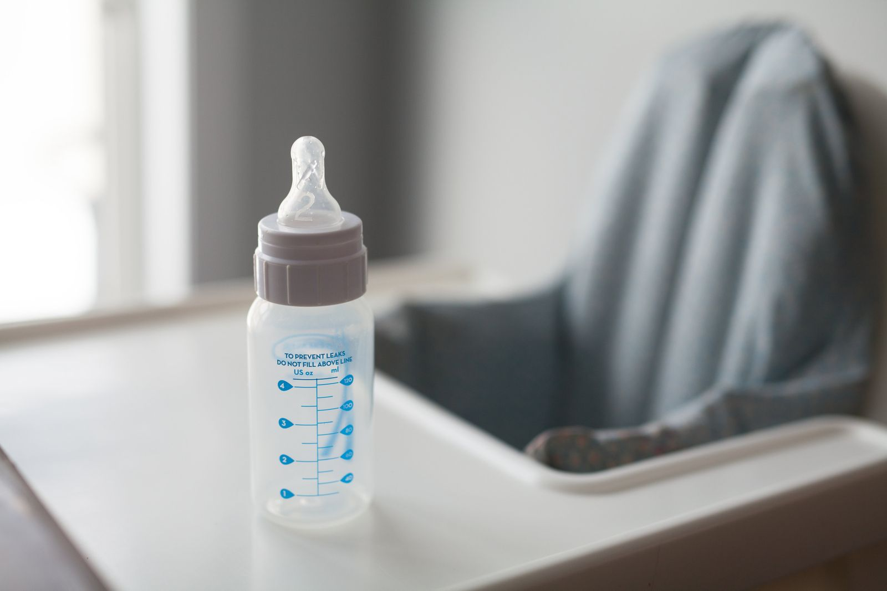
- Breastfeeding evidence
- Checking intake
- Latch, intake and pain
- Milk storage, medicines and feeding pain
- Preparing and choosing formula
- Starting solids and introducing allergens
- Food safety and choking
- Vitamin D and iron
Breastfeeding evidence
Breastfeeding can provide nutrition and infection protection, and families need practical support when they choose it. The size of a reported benefit depends on the outcome and study design. Observational comparisons can also reflect differences in income, health and access to care; an odds ratio is not a percentage reduction in every baby’s risk. The survey figure below describes feeding rates, not why a family stopped. Feed the baby adequately and use the approach that can be sustained with appropriate care. CDC breastfeeding guidance.
Parents report feeding histories in the survey. These percentages do not identify why a family stopped or estimate the effect of a leave policy.
Checking intake
Diaper output, weight, swallowing and behaviour during feeds are more useful together than a single rule. If feeds are persistently painful, the baby cannot stay attached or take the bottle, weight is still falling, or urine output is low, arrange a feeding assessment. A clinician may recommend expressed milk, formula or another plan while the cause is addressed. Supplementation needs do not make feeding support unnecessary. CDC intake signs.
Latch, intake and pain
Ask someone qualified to observe an entire feed when latch or intake is a problem. Repeated pain should be assessed rather than endured. A pump can help collect milk but its output alone does not measure all the milk a baby can obtain at the breast. Discuss supply concerns, breast redness, fever or worsening breast pain with your clinician; treatment depends on the cause. Do not begin antibiotics or a supply medicine from this page.
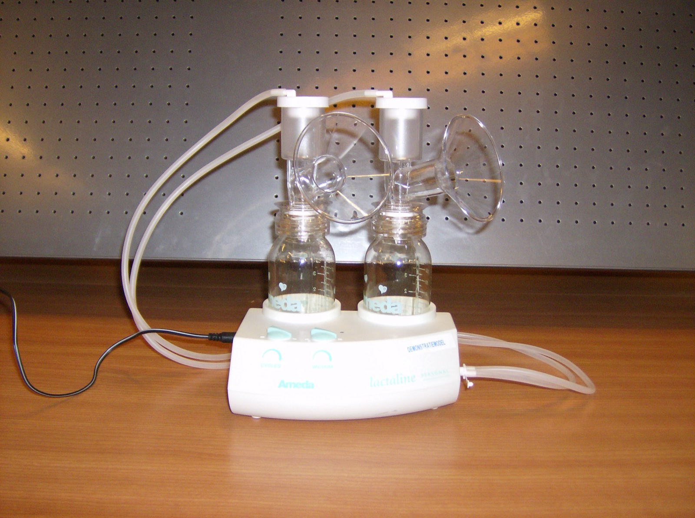
Milk storage, medicines and feeding pain
Use the storage table below for home handling; NICU or individual clinical instructions may differ. For medicines, ask a pharmacist or clinician to check the particular drug, dose, infant age and health. A relative infant dose below a single percentage is not a universal safety test. Do not stop necessary treatment or assume that pumping and discarding milk is required without checking. Domperidone is not FDA-approved in the US and has serious cardiac risks. Tongue-tie assessment should consider feeding function and alternatives before a procedure. FDA domperidone information.
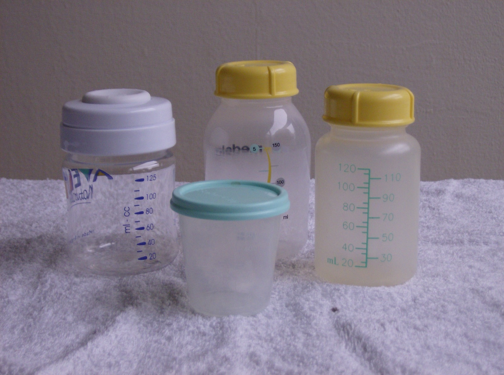
Preparing and choosing formula
Use commercial infant formula appropriate for the baby and follow its mixing instructions exactly, measuring water first. Do not dilute it, concentrate it, make a homemade substitute or use toddler drinks for an infant. Powder is not sterile. CDC specifies extra hot-water precautions for babies under two months, born prematurely or with weakened immunity; ask the team about sterile ready-to-feed formula and the preparation plan. Follow local water-safety advice: boiling does not remove chemical contamination. The storage table gives use and refrigeration limits. CDC preparation guidance.
Starting solids and introducing allergens
Start complementary foods at about six months when the baby has appropriate head control and can sit with support and swallow food. Do not start before four months. Introduce suitable textures and potentially allergenic foods alongside other foods; severe eczema or egg allergy needs a clinician’s peanut-introduction plan. The LEAP result below concerns selected high-risk infants assessed before introduction, not a home challenge for a baby with a possible allergy. CDC food introduction.
LEAP randomized 640 infants; 628 had evaluable age-five outcomes. It excluded skin-test wheals greater than 4 mm and used supervised baseline food challenges. LEAP-Trio assessed 508 original participants; 497 had a determinable allergy outcome, using food challenges, reported intake or a biomarker model. Nonallergic participants had eaten or avoided peanut as they wished after LEAP-On. Lines link different follow-up populations. This is not an instruction to challenge a possible allergy at home.
Food safety and choking
Have the baby sit upright with an attentive adult for food. Adapt texture and shape: soften hard foods, remove bones and pits, cut round foods into suitable small pieces, and avoid whole nuts and spoonfuls of thick nut butter. Gagging can occur while learning; inability to breathe or cry is an emergency. Review infant choking first aid before it is needed. Do not give honey before twelve months, including in cooked food. CDC choking hazards; foods to avoid.
Use clean containers and follow an individual hospital plan when applicable. Never microwave milk or formula.
Vitamin D and iron
US guidance recommends 400 IU of vitamin D daily from shortly after birth for breastfed and partly breastfed infants. Formula-only infants may not need a supplement once taking thirty-two ounces daily. Check the product concentration with the clinician or pharmacist. Iron depends on feeding, prematurity and individual risk: AAP guidance recommends 1 mg/kg daily from four months for exclusively or partly breastfed infants until appropriate iron-containing foods supply it. Preterm plans can begin earlier and differ. Do not choose an iron dose from a multivitamin label alone. CDC vitamin D. AAP iron guidance.
Sleep
the whole year
Back, flat, firm and separate for every sleep. Put your baby on their back in a safety-approved crib, bassinet or play yard with a firm, flat mattress and fitted sheet. Keep pillows, toys, bumpers and loose blankets out. Share your room for at least the first six months. If you might doze during a feed, avoid the sofa or armchair; remove bedding from an adult bed beforehand and return the baby to their own sleep space as soon as you wake. This precaution does not make bed-sharing safe. Night waking varies widely; a feeding or growth problem takes priority over a sleep routine. AAP safe sleep
The sleep setup · Bed-sharing evidence and precautions
Reference: sleep
- Safe sleep
- Newborn sleep and feeding
- Sleep duration
- Night waking and "sleeping through the night"
- Bed-sharing evidence and precautions
- Swaddling, pacifiers and temperature
- Changes in sleep and naps
- What sleep-training trials found
- Sleep monitors and products
Safe sleep
For every sleep, place the baby on their back on a firm, flat, separate surface that meets infant-sleep safety standards. Keep soft bedding and objects out. Room-share for at least the first six months. A baby who rolls both ways can remain in the position they reach, but still starts each sleep on their back. Stop swaddling as soon as rolling attempts begin. Reflux does not justify an inclined or side-sleeping arrangement. AAP guidance.
The 1990 and 2022 endpoints use death-certificate data; the 2015-to-2020 annual series uses linked birth and infant-death records. Other chart years are interpolated. Published totals are retained separately because rounded components need not add exactly; the 2022 components are calculated from counts and rounded. Changes in datasets and cause classification limit comparisons. This figure cannot isolate a campaign’s effect.
Newborn sleep and feeding
Newborn sleep is broken into short periods around feeding and care. A schedule is not proof that intake is adequate, and a sleep chart does not override the discharge feeding plan. Ask the clinician when longer intervals are appropriate for this baby, particularly after prematurity, jaundice or poor growth.
Sleep duration
The figure reports parent-described sleep in a Swiss longitudinal study. Its wide population percentiles are observations, not a safe minimum or maximum for an individual baby. Check feeding, waking behaviour and breathing rather than trying to force the child onto the mean. Bring a persistent change or unusually difficult waking to the care team.
NSF 2015 expert recommendations shown in the chart: fourteen to seventeen hours at zero to three months, twelve to fifteen at four to eleven months, and eleven to fourteen at one to two years. These are age-group guidance, not observations from the Swiss study.
Night waking and "sleeping through the night"
“Sleeping through” can mean different lengths of uninterrupted sleep, so comparisons often conceal different definitions. Ask about night feeds before reducing them. Keep overnight care calm and give the household a workable way to share it. If sleep disruption is causing severe distress or unsafe sleep, ask for help now; a developmental timetable is not treatment.
Bed-sharing evidence and precautions
AAP guidance recommends a separate infant sleep surface and does not recommend bed-sharing. The chart compares selected case-control findings, with differing definitions and reference groups. A nonsignificant association does not establish safety, and an estimate below one does not make bed-sharing protective for an individual child. Avoid sofas and armchairs especially when tired, and discuss a realistic feeding and sleep plan with the care team. Current AAP guidance.
Observational estimates remain vulnerable to confounding and differing exposure measurement. A confidence interval crossing one does not establish safety. Follow the current AAP separate-surface advice.
Swaddling, pacifiers and temperature
Do not use weighted swaddles, blankets or sleep clothing. Swaddling never makes an unsafe sleep surface safe. Keep the baby from overheating and do not attach a pacifier to clothing, a string or a toy during sleep. If breastfeeding, discuss pacifier introduction once feeding is established. See the sleep setup for rolling and room-sharing advice. AAP guidance.
Changes in sleep and naps
Sleep can change around four months and at other ages. “Regression” is a description, not a diagnosis or a precise neurological deadline. Illness, feeding changes and family routines can also disturb sleep. Adjust the routine without assuming that a new pattern will be permanent or that a particular method must be started.
What sleep-training trials found
For an older infant, discuss behavioural sleep options with the clinician after checking feeding, growth and health. Trials have studied several approaches, including graduated checks and bedtime fading; no result tells every family to leave a baby crying until morning. Gradisar’s trial enrolled forty-three infants aged six to sixteen months. It detected some sleep improvements and no differences in the measured follow-up outcomes, but could not exclude every adverse effect. Park’s 2022 review found improved reported sleep problems and maternal sleep quality, without a significant pooled maternal-depression benefit. Gradisar trial abstract; Park review.
Failure to detect harm does not exclude every adverse effect or justify applying these methods to younger or ill infants.
Sleep monitors and products
Consumer monitors and movement devices do not replace the recommended sleep environment or clinical assessment. If a baby has prescribed monitoring, use that individual plan. Do not interpret a reassuring consumer reading as a reason to delay help for breathing difficulty or a baby who cannot be roused. AAP safe-sleep guidance.
Soothing, crying and temperament
the early months
Start with the baby in front of you. Check hunger, diaper, temperature, tiredness and signs of illness. Try holding, walking, gentle rocking or a quiet sound. A technique that worked yesterday may fail tonight. Unusually weak, high-pitched or persistent crying, poor feeding, fever or a baby who seems different needs medical advice. You can put a crying baby safely down while you calm yourself and arrange a break. A crying curve describes groups; it cannot diagnose your baby.
Ways to soothe · Colic and treatment evidence
Reference: soothing, crying and temperament
- Crying patterns
- When a caregiver needs a break
- Colic and treatment evidence
- Ways to soothe a baby
- Responding to a young baby
- Differences in temperament
Crying patterns
The crying review pooled parent diaries and questionnaires from fifty-seven studies. It found substantial differences across studies, countries and ages. The plotted points are three reported weighted means, connected for readability. They cannot classify one baby’s distress. A sudden change, poor feeding, fever or a baby who seems unwell needs assessment. Vermillet 2022 methods and results.
When a caregiver needs a break
Plan a handover before you reach the point of losing control. A short break while the baby lies safely in an empty crib is preferable to continuing to hold them when you fear you might shake or strike them. Never shake a baby. Ask for immediate help if safety is in doubt. The schematic below has no measured injury rate or individual prediction. AAP report.
Colic and treatment evidence
Persistent crying deserves assessment of feeding, growth and health before a remedy trial. Evidence for dietary changes in colic is uncertain; a suspected milk-protein allergy needs its own assessment, a nutritionally adequate plan and planned reintroduction. Probiotic findings depend on the strain and population, and do not establish benefit for every product or formula-fed baby. Avoid a broad elimination diet without support. Cochrane 2018 review abstract; CPS allergy guidance.
Hill randomized 107 pairs; ninety completed the study. Mothers could not be blinded to their diet. Sung pooled individual data from four double-blind trials; values are adjusted between-group differences in change from baseline. They do not apply to every strain or infant. Assessment of feeding, growth and illness comes first.
Ways to soothe a baby
Check hunger, diaper, temperature and signs of illness. Try holding, gentle rocking, a walk or a quieter room while staying alert to the baby’s response. Put a sleeping baby onto their separate sleep surface rather than leaving them in a carrier or seat. If crying remains hard to manage, share the care and ask for assessment; exhausting every soothing technique is not a requirement before calling.
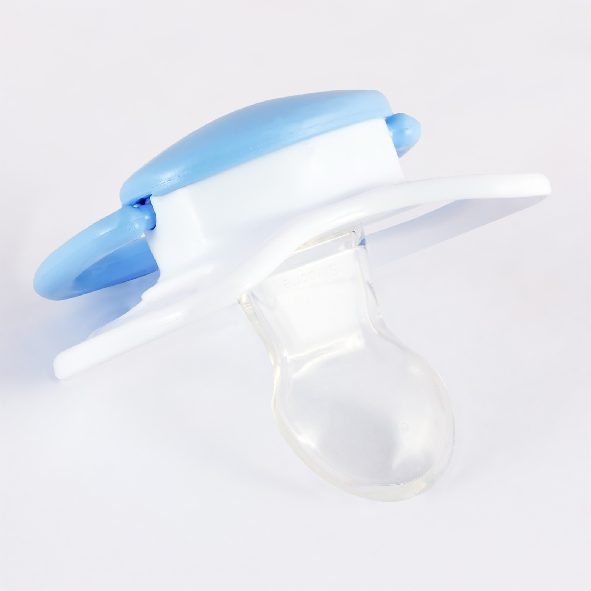
Responding to a young baby
Respond to the baby’s needs, and let another safe caregiver take a turn. You do not have to make every cry stop or create a perfect response record. Ordinary soothing advice should not be turned into a claim that one missed cue harms attachment or brain development.
Differences in temperament
Babies vary in how readily they settle and how much stimulation they tolerate. Describe the patterns you see rather than applying a fixed personality label. Ask for help if feeding, sleep or distress is disrupting care. A temperament explanation should not dismiss a new symptom.
Health, illness and fever
the whole year
Use age and symptoms together. A rectal temperature of 100.4F (38C) or higher in a baby under three months needs immediate medical assessment, even if the baby looks well. Breathing difficulty, blue lips or tongue, unusual drowsiness, green vomit or dehydration also needs urgent help. Call promptly about any fever under six months. Medicine may improve comfort but cannot tell you whether an illness is serious. Confirm the dose with your clinician for a child under two; this guide's calculator requires actual age, weight and the exact bottle concentration. AAP medicine safety
Fever and assessment · Medicine tool
Reference: health, illness and fever
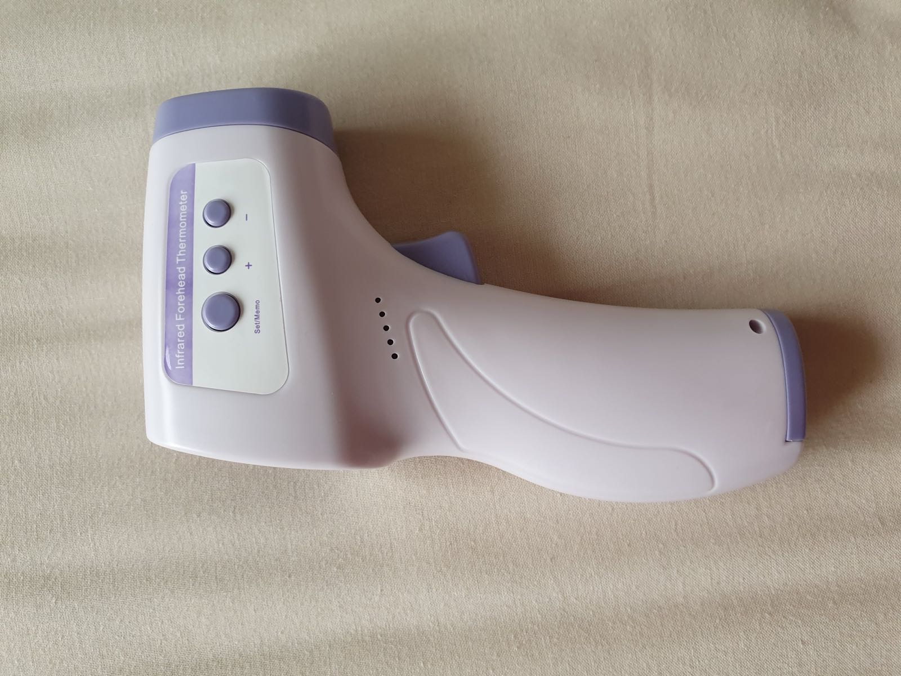
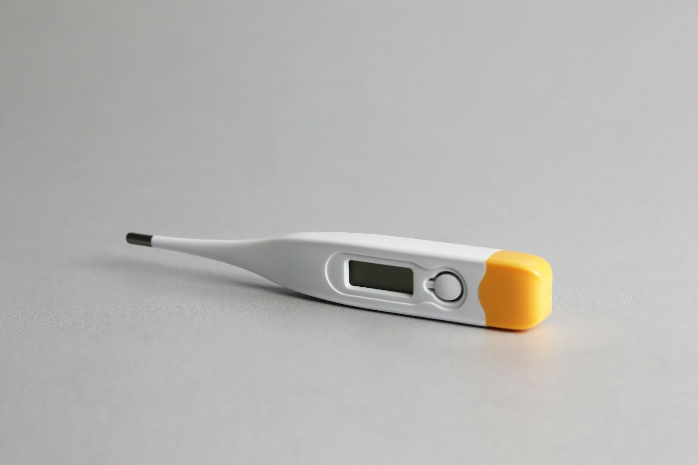
- Fever under three months
- The red-flag triage card
- Fever and comfort
- Fever medicines and the dosing tool
- Febrile seizures
- Breathing, RSV and bronchiolitis
- Spit-up, reflux and the milk-allergy question
- Stools, vomiting and dehydration
- The common illnesses, briefly
- Persistent jaundice
- Symptoms needing prompt assessment
- Measuring vital signs
Fever under three months
A measured temperature of 38°C (100.4°F) or higher before three months needs immediate medical assessment, even if the baby otherwise looks well. Use chronological age since birth, not corrected age. Do not delay care to see whether fever medicine works. A baby this young with poor feeding, unusual sleepiness or other worrying signs also needs prompt help without a fever. Follow any stricter plan given after prematurity or other illness. NICE fever guidance. AAP fever warning.
The red-flag triage card
Call emergency services for severe breathing difficulty, blue lips or tongue, unresponsiveness or an ongoing seizure. A young infant’s fever needs immediate assessment. Green vomit needs urgent evaluation now, rather than waiting for a routine appointment. For a less urgent concern, call the care team and describe age, temperature, feeding, diapers and the change from usual behaviour. The tool is a limited checklist; an omitted symptom is not reassurance. RCH vomiting guideline; NICE assessment guidance.
Fever and comfort
Age and the child’s condition matter more than a temperature number alone. Follow the local clinical advice for measuring temperature and tell the clinician how it was measured. Fever medicine can improve comfort but does not diagnose the cause or reliably prevent febrile seizures. Keep offering appropriate fluids. Seek advice for worsening symptoms, dehydration, persistent fever or a parent’s concern; follow the immediate rule for babies under three months. NICE fever guidance.
Fever medicines and the dosing tool
The lookup requires actual age, clinician-confirmed use and the exact supported bottle strength. It blocks under-three-month dosing and ibuprofen below six months. AAP guidance says acetaminophen below two years needs a doctor’s guidance. Read every ingredient to avoid duplicate dosing, and measure liquid with an oral syringe. Do not alternate medicines or borrow another child’s dose without instructions. If a dose error may have occurred, contact poison control promptly rather than calculating a correction here. AAP acetaminophen. AAP ibuprofen.
Febrile seizures
For a seizure, protect the child from nearby hazards, note the time, do not restrain them and put nothing in the mouth. Call emergency services for a first seizure, one lasting more than five minutes, breathing trouble or a child who remains unconscious. Do not assume that jerking in a young infant is a harmless fever seizure. NHS seizure first aid.
Breathing, RSV and bronchiolitis
Look at breathing effort as well as rate. Blue colour, pauses with illness, marked chest pulling, grunting or an exhausted baby requires urgent help. A home pulse oximeter cannot rule out a problem. Feeding less because breathing is difficult also needs assessment. NIH newborn breathing symptoms; NICE serious-illness signs.
Spit-up, reflux and the milk-allergy question
Small amounts of milk brought up after feeds can occur in a comfortable baby who is growing. Repeated forceful vomiting, green or bloody vomit, a swollen belly, poor growth or inability to keep fluids down needs assessment. Keep sleep flat and on the back; do not raise the cot or use a wedge for reflux. NHS reflux guidance.
Stools, vomiting and dehydration
Stool appearance varies with feeding and age. Bring blood, pale or white stool, a marked change with illness, or concern about dehydration to the care team. A photograph can help describe colour, but cannot diagnose allergy or exclude disease. Do not change to a restrictive diet or specialized formula from stool colour alone. CPS pale-stool warning. CPS allergy assessment.
The common illnesses, briefly
For respiratory or stomach illness, track feeding, breathing, urine output and alertness. Seek help if the baby cannot keep feeds down or is becoming dehydrated. The ORS tool applies only after a clinician has assessed the baby and confirmed WHO Plan B; it is not a home diagnosis or a substitute for reassessment. Continue the feeding plan advised by that clinician. Do not mix a homemade rehydration solution from this page. WHO IMCI Plan B.
Persistent jaundice
For newborn jaundice, use the measured bilirubin result and booked follow-up, as described in the first-days section. Persistent jaundice or pale stools needs assessment for causes beyond an ordinary early rise. Do not decide that a baby is safe because the yellow colour seems lighter in a photograph. CPS guidance.
Symptoms needing prompt assessment
This page cannot list every urgent illness. New severe pain, an ill-looking baby, a non-blanching rash, unusual movements, breathing trouble or a major change in responsiveness warrants urgent clinical advice. Tell the clinician if your baby was premature or has an individual risk plan. If the baby is deteriorating while you wait for a callback, seek emergency help. NICE serious-illness assessment.
Measuring vital signs
Infant heart and breathing rates change with sleep, crying and illness. A printed reference range does not establish that a sick baby is well. Describe what you see and how the baby is feeding and waking. Do not delay care while trying to obtain a perfect home measurement.
Growth and development
the whole year
Watch the direction of growth and changes in skills. A growth percentile compares one measurement with a reference population. It is not a grade, and one number cannot establish health. Bring the growth record to visits and ask about a change in the pattern. Talk, read, sing and offer supervised floor play. Tell your clinician about a missed milestone or any lost skill; do not wait for the far edge of a published reference range. Premature babies need corrected age and sometimes a different growth chart. CDC milestones
Growth charts · Milestones and referrals
Reference: growth and development
- Reading a growth chart
- WHO and CDC growth charts
- When growth needs assessment
- Catch-up, catch-down, and rapid gain
- If your baby was born early: corrected age
- Motor milestone ranges
- The 2022 milestone change (and crawling)
- Tummy time and movement
- Feet, shoes and walkers
- Vision and eye concerns
- Development and enrichment claims
- Talking and reading together
- Screens in the first two years
- Concerns to raise promptly
- Developmental screening and early help
Reading a growth chart
A percentile locates a measurement within a reference population. It is not a grade, and a low or high position alone cannot diagnose health or illness. The clinician interprets the pattern, measurement quality, feeding, examination and history together. The tool below uses WHO monthly coefficients and interpolation; it is an approximate reference, not a diagnosis. CDC chart guidance.
Growth percentile plotter. Enter your baby's age, sex, and a weight, length, or head measurement to see the WHO percentile and z-score (this interactive tool needs JavaScript). For reference, on the WHO standard a 6-month-old boy at the median weighs about 7.9 kg and a 12-month-old about 9.6 kg; a 6-month-old girl about 7.3 kg and a 12-month-old about 8.9 kg. The tool interpolates monthly coefficients; rounding, measurement and age conventions can differ from a clinical chart. WHO via CDC
WHO and CDC growth charts
In US practice, CDC recommends WHO growth standards from birth to age two. The two chart systems differ in populations and construction as well as feeding criteria. A gap between their medians cannot be assigned entirely to formula feeding. Use the chart chosen by the clinical team consistently and review transitions with them. CDC guidance.
Rounding can make subtraction of the displayed values differ by 0.01 kg. In US practice, use WHO standards from birth to age two and discuss growth with the clinical team.
When growth needs assessment
A change in growth needs measurements checked and the whole child assessed. Bring feeding details and any vomiting, swallowing difficulty or illness to the visit. The response may involve feeding support, investigation or closer follow-up; adding a fixed number of calories without assessment is not a general treatment plan. Ask what change is expected and when the baby will be measured again.
Catch-up, catch-down, and rapid gain
Growth after illness, prematurity or a small birth size needs an individual goal. Faster gain is not automatically better, and no single percentile is a target for every baby. Use the discharge nutrition plan and ask before changing fortification or formula concentration.
If your baby was born early: corrected age
Corrected age subtracts the weeks born before forty weeks from chronological age and can help interpret development and some growth comparisons. It does not change age-based emergency fever rules or routine vaccine timing. The growth tool blocks a corrected age before the due date, but cannot select the right chart or nutrition plan for a premature baby. Ask the neonatal team how it wants growth recorded. AAP corrected age.
Motor milestone ranges
Use milestones to describe development and raise concerns, not to compete. The WHO bands are population intervals for selected motor skills. Missing a milestone, loss of a skill or a concern about movement, hearing or communication warrants discussion before a plotted endpoint. A milestone checklist is not a validated screening test. CDC developmental concerns.
The 2022 milestone change (and crawling)
CDC’s revised checklists place milestones at ages when most children are expected to show them. They support conversations with the care team; they do not replace screening or tell a parent to wait until a later age to raise a concern. Use the current checklist for the child’s age and bring specific examples. CDC checklists and screening.
Tummy time and movement
Offer supervised floor time and short periods on the tummy while the baby is awake. Adjust position and duration to the child’s comfort and clinical needs. Sleep still starts on the back. Ask the care team about persistent asymmetry, stiffness, unusual floppiness or a preference that is becoming difficult to change. NICHD tummy time.
Feet, shoes and walkers
Allow comfortable movement and ask about shoes when the baby starts walking outdoors. Avoid products that claim to teach walking or correct an unexplained gait without assessment. Bring persistent asymmetry or loss of a movement skill to the clinician rather than waiting for a promised phase to pass. CDC concern guidance.
Vision and eye concerns
Newborn hearing screening and routine eye checks do not rule out every later problem. Tell the clinician about poor response to sound, difficulty following faces or objects, a persistent eye turn, or an unusual white reflection in the pupil. Ask how urgently the finding should be assessed; do not rely on a routine appointment months away. AAP vision warning signs.
Development and enrichment claims
Talk, play, hold and respond during ordinary care. This does not require a brain-training programme or perfect cue reading. Claims about synapses, brain volume or a narrow “window” do not establish that a marketed activity improves an individual baby’s outcome. Ask for developmental assessment when there is a concern rather than buying a promised neurological fix.
Talking and reading together
Speak in the languages you use comfortably, answer the baby’s sounds and share books or songs. Let the interaction follow the child’s attention. A book can be a few pictures and a conversation, not a completed reading assignment. Do not turn word counts into a prediction of intelligence. AAP early literacy.
Screens in the first two years
Make room for face-to-face interaction, movement and sleep. AAP guidance discourages routine screen use before eighteen months apart from video chatting. When a screen is used, an adult’s participation and the content matter. A screen recommendation is not evidence that a single exposure causes a developmental disorder. AAP young-child media guidance.
Concerns to raise promptly
If you are concerned, tell the clinician what has changed and request assessment. In the US, parents of children under three can also contact their local early-intervention system to request a free eligibility evaluation without waiting for a diagnosis or referral. Eligibility and the services offered are determined by that programme; the call does not guarantee every treatment is free. CDC referral route.
Developmental screening and early help
Routine US autism screening is recommended at eighteen and twenty-four months, with earlier assessment when concerns arise. Social communication, movement, hearing and other development should still be discussed during infancy. A screen is not a diagnosis, and a negative result is not a reason to dismiss a parent’s continuing concern. AAP periodicity schedule.
Daily care and hygiene
the whole year
Clean gently, protect skin and brush the first tooth. Change wet or dirty diapers, clean skin folds gently and keep the cord clean and dry. A short bath is enough; never leave a baby alone in water. Use a bland moisturizer for dry skin, and ask about persistent or painful rashes. When the first tooth appears, brush twice a day with a smear of fluoride toothpaste about the size of a grain of rice. Do not put a baby to bed with a bottle. Follow the clinician's plan for prescription creams and supplements.
Bathing and skin · Teeth and fluoride
Reference: daily care and hygiene
- Diapering and diaper rash
- Wipes, water and diaper choices
- Gentle skin care
- Caring for eczema
- Cradle cap
- Teething symptoms
- Teething products to avoid
- The first tooth and early oral care
Diapering and diaper rash
Change wet or soiled diapers regularly, clean gently and let irritated skin dry before adding a fragrance-free barrier such as petrolatum or zinc oxide. Avoid rubbing off clean barrier paste at every change. Worsening rash, blisters, pus, fever or a rash that does not improve needs assessment rather than repeated changes of product. AAP diaper-rash guidance.
Wipes, water and diaper choices
For irritated skin, use water or alcohol-free, fragrance-free wipes and clean without scrubbing. A product labeled “natural” can still irritate. If a rash follows a particular product, stop using it and discuss the pattern with the clinician. AAP advice.
Gentle skin care
Use gentle skin care and avoid heavily scented products. Bathing and moisturizing need not follow a rigid daily ritual for every infant. Ask about persistent dryness or a spreading rash. The newborn exam and any prescribed plan matter more than a product’s claim to protect the microbiome.
Caring for eczema
Eczema needs regular moisturizing and a treatment plan appropriate to its severity and location. A clinician may prescribe a topical anti-inflammatory; ask which strength, where to apply it and for how long. Do not avoid all treatment out of fear of steroids or use a stronger product without advice. Pain, crusting, blistering or rapidly worsening skin needs assessment. Moisturizing an affected baby is distinct from a claim that treating all healthy newborn skin prevents eczema or allergy. AAP treatment guidance.
Cradle cap
Cradle cap can produce greasy scales on the scalp. Do not pick them or use an adult dandruff medicine without advice. Gentle washing and a soft brush may help; ask a pharmacist or clinician about suitable products. Swelling, bleeding, discharge or a rash that spreads needs assessment. NHS cradle-cap guidance.
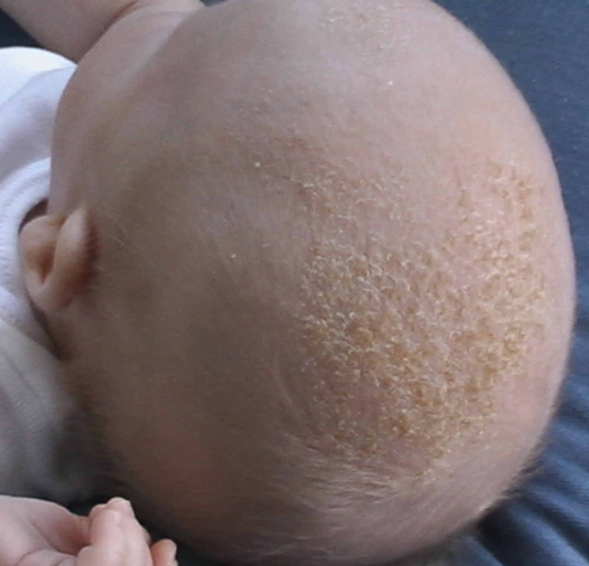
Teething symptoms
For sore gums, try a clean finger or a firm rubber teether that is not frozen. Supervise its use. A measured fever or a baby who seems ill needs its own assessment, particularly under three months; do not explain it away as teething. FDA teething guidance.
Teething products to avoid
Do not use benzocaine or lidocaine on a baby’s gums for teething, homeopathic teething products, or teething necklaces and bracelets. These can cause serious harm. Medicine for pain requires the age, clinician and bottle-strength checks in the dosing section. FDA warning.
The first tooth and early oral care
Begin brushing when the first tooth appears, twice daily with a smear of fluoride toothpaste about the size of a grain of rice. Arrange a dental visit by the first birthday. Do not put the baby to bed with a bottle. Fluoride toothpaste and varnish are distinct from swallowed prescription fluoride products. FDA recommends limiting swallowed prescription fluoride products to children at least three years old at high cavity risk and announced enforcement action against incompatible labels. Do not give infant fluoride drops on the basis of an old supplement table. AAP oral-health advice. FDA ingestible fluoride information.
Keeping the baby safe
the whole year
Prevent the hazards that ordinary supervision can miss. Use a rear-facing car seat according to its manual. Keep the sleep space empty and furniture anchored. Secure medicines, cleaners, cords, batteries and magnets; a suspected swallowed button battery or magnet needs immediate assessment. Stay within reach around water and on raised surfaces. Serve soft foods in shapes that reduce choking risk, with the baby upright and watched. Take an infant first-aid class. The emergency section follows the 2025 AHA infant choking guidance. AHA 2025 infant first aid
Choking and first aid · Home hazards
Reference: keeping the baby safe
- Injury risks by age
- Car seats: rear-facing as long as the seat allows
- Preventing hot-car deaths
- Choking and infant CPR (the 2025 update)
- Drowning
- Button batteries and high-powered magnets
- Anchoring furniture and securing the home
- Firearms in the home
- Babywearing safely
- Checking safety claims
Injury risks by age
As movement changes, so do the places a child can reach. The chart uses selected 2022 US cause-of-death counts, not a risk calculator or a complete injury-prevention ranking. Check the home before crawling and walking arrive: small objects, furniture, water, windows, stairs, medicines and cords. A category’s share of all deaths is different from its share of injury deaths.
The groups have different population sizes and years of exposure. Underlying causes are coded from death certificates. Rankings depend on the list of causes eligible to be ranked; a rank does not identify the most effective prevention measure.
Car seats: rear-facing as long as the seat allows
Use the seat correctly on every trip and keep the baby rear-facing within its limits. Car seats are for travel. Move a sleeping baby to a suitable flat sleep surface when travel is over. A second-hand seat needs a known history, all required parts and instructions, no relevant recall, and use within the manufacturer’s lifetime. Ask a certified technician if you are unsure. NHTSA guidance. AAP sleep guidance.
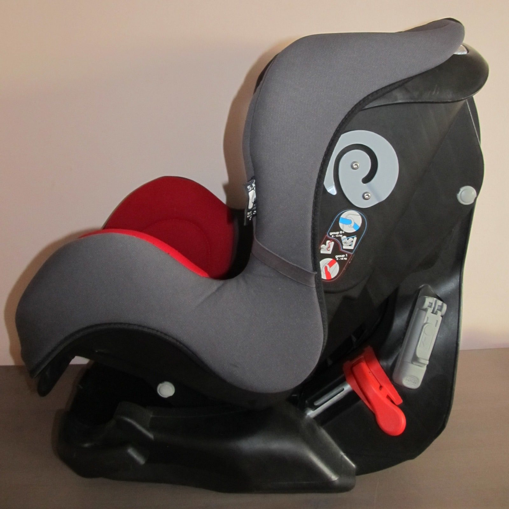
Preventing hot-car deaths
Never leave a baby alone in a vehicle, including for a short errand. Check the back seat every time you park and lock the vehicle so children cannot enter it. Arrange a callback if a child does not arrive at care. If a child is trapped in a hot car, call emergency services immediately. NHTSA heatstroke prevention.
Choking and infant CPR (the 2025 update)
Keep small objects and food choking hazards out of reach. Stay with the baby while they eat; a camera is not supervision. If the baby cannot breathe or cry, use the severe-choking sequence in first aid and call for emergency help. Take a hands-on infant first-aid class rather than relying on a written sequence alone.
Drowning
Stay within arm’s reach of an infant near water, including in the bath. Empty containers and tubs after use. A pool needs a barrier separating it from the home and yard, with a self-closing, self-latching gate, as well as active supervision. Lessons, alarms and flotation equipment do not replace either layer. AAP water safety.
Button batteries and high-powered magnets
Keep button batteries, spare cells, remote controls and magnets secured. Suspected swallowing needs emergency assessment even before symptoms appear. Do not induce vomiting or delay departure to look for the battery. Honey is only advised for a possible lithium coin-cell ingestion within twelve hours in a child at least twelve months old who can swallow; it must not delay emergency care. See the emergency instructions for that specific protocol. National Capital Poison Center guideline.
Anchoring furniture and securing the home
Secure furniture and televisions according to the manufacturer’s instructions. Keep cords and climbable objects away from windows, install appropriate stair barriers, and secure medicines and cleaning products. Recheck as the child gains reach and mobility. An anchor or lock needs correct installation; a childproof label is not a guarantee. CPSC furniture anchoring.
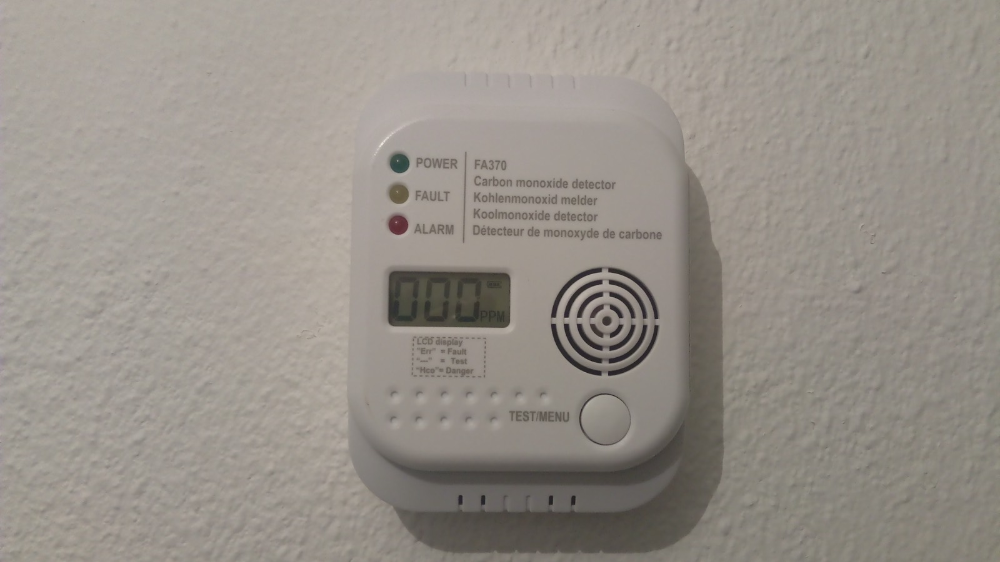
Firearms in the home
The safest home for a child has no firearm. If one is present, keep it unloaded and locked, with ammunition locked separately and keys inaccessible to children. Ask about storage in other homes the child visits. A claim that a household is careful does not replace secured storage. AAP firearm safety.
Babywearing safely
Follow the carrier’s age and weight instructions. Keep the baby’s face visible, nose and mouth clear and chin away from the chest; check position and breathing regularly. Ask the clinician about a premature or medically vulnerable infant before using a sling. Transfer a sleeping baby to their separate flat sleep surface as soon as practical. CPSC sling warning; AAP sleep guidance.
Checking safety claims
Choose measures that address an actual hazard. Keep working smoke and carbon-monoxide alarms, use the sleep and travel setup correctly, and secure water, batteries and medicines. A monitor, premium product or reassuring marketing claim cannot compensate for an unsafe setup. Ask the local fire service or manufacturer about installation and maintenance instead of relying on a shopping checklist.
Immunization
the whole year
Use the current local schedule and the baby's record. Vaccination prevents serious infections, but timing depends on country, product, medical history and previous doses. Bring the record to every visit. The timeline below is a planning aid, not proof that a dose is due or has been given. Check the linked national schedule before acting. Some missed series can be caught up without restarting; rotavirus has strict age limits. RSV protection is usually provided through either vaccination during pregnancy or an infant antibody, with eligibility exceptions. CDC schedule notes
Schedules and timeline · RSV protection
Reference: immunization
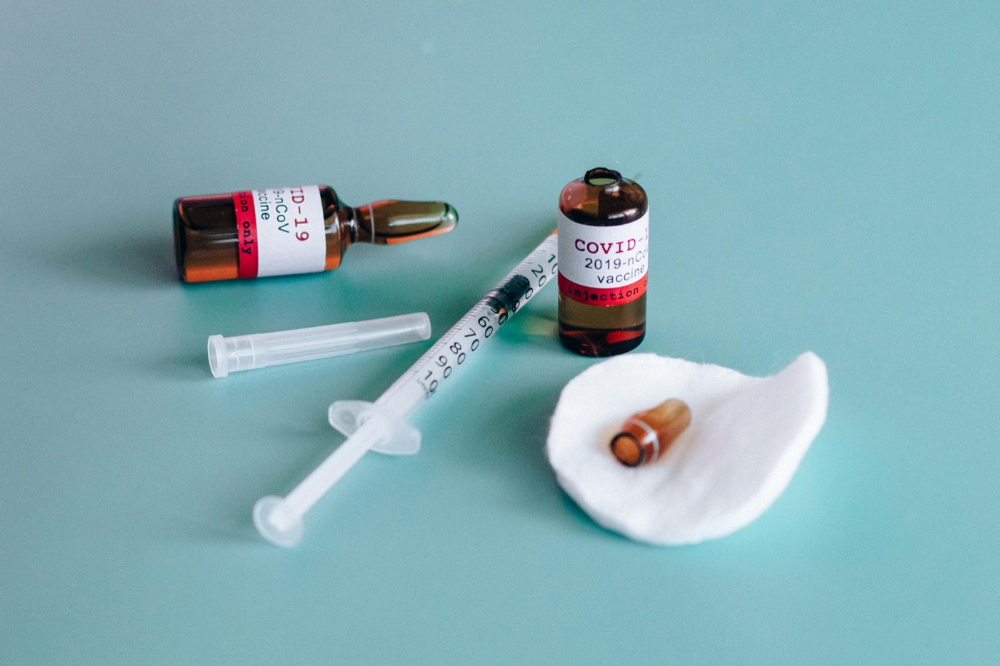
- Vaccination evidence
- The schedule and what each shot prevents
- Your baby's schedule (a tool)
- Vaccine safety
- MMR and autism: the evidence
- Combined vaccines and dose timing
- What to expect after a shot, and what to call about
- Making the shots hurt less
- RSV protection
- Cost, records, and special situations
- Checking current US vaccine guidance
Vaccination evidence
Vaccines protect against specific infections. The figure combines a modeled global estimate with dated US surveillance and school-coverage data, which have different methods and populations. They do not establish that a particular national coverage change caused every case. Review the baby’s own record and clinical risks with the vaccinating team. CDC schedule notes.
A national average does not describe each community or prove the cause of every case. Missing two recorded doses is not the same as having no immunity.
The schedule and what each shot prevents
Use the current local programme and the child’s documented doses. Birth status, prematurity, medical conditions, travel and missed doses can change the plan. A calendar date passing does not mean a vaccine was received. Ask the team to reconcile the record at each visit rather than restarting or omitting doses from memory. CDC notes and exceptions.
Your baby's schedule (a tool)
The tool estimates routine calendar dates for selected programmes; it does not implement every catch-up, product or risk rule. The Canadian selection is British Columbia. Check all dates against the current linked local guidance and the vaccination record. Use calendar months rather than treating every month as thirty days.
Vaccine safety
Discuss the expected reactions, contraindications and when to seek help for each product. Safety surveillance can detect signals, but a report after vaccination does not by itself establish causation. A prior severe allergic reaction or an individual medical condition needs review before the next dose. CDC safety surveillance.
MMR and autism: the evidence
Vaccines are not supported as a cause of autism by the available evidence. Concerns about development still deserve assessment at the appropriate time. Do not delay developmental help while debating a vaccination date. WHO safety review, December 2025.
Combined vaccines and dose timing
A routine schedule is designed around the infections, available products and the ages at which protection is needed. Ask about combination products and any individual contraindication. Spacing vaccines on an invented schedule can leave a child unprotected longer and should not be presented as a proven safer alternative. CDC combination and timing advice.
What to expect after a shot, and what to call about
Get product-specific advice about soreness, fever and other expected effects. Do not give fever medicine in advance unless the vaccinating clinician recommends it. Breathing difficulty, facial or throat swelling or collapse needs emergency help. Fever in a baby under three months still needs immediate medical advice, including after a vaccine; do not assume its cause. AAP fever advice.
Making the shots hurt less
Ask about holding, breastfeeding during the procedure when appropriate, and the clinic’s infant-comfort options. Any sucrose dose or numbing medicine should be selected by the team, not mixed at home from a teaspoon recipe. Comfort measures can reduce distress without replacing the vaccine or its safety checks.
RSV protection
RSV prevention in infancy can involve maternal vaccination or an infant antibody, depending on timing, programme and eligibility. These are different products. Confirm which protection was given and whether the infant needs another intervention under current local guidance. Do not infer eligibility from age alone. CDC RSV notes.
Cost, records, and special situations
Ask the clinic about payment and publicly funded routes before assuming a missed vaccine is unaffordable. In the US, Vaccines for Children covers eligible children through participating providers; eligibility and other visit charges need checking. Other programmes have their own rules. CDC VFC programme.
Checking current US vaccine guidance
US recommendations, product availability and state or clinic requirements can change on different schedules. Check the current CDC notes and the advice from the child’s care team rather than using a political forecast or an old table as a clinical rule. Bring questions about a conflicting recommendation to that team. Current CDC notes.
Well-baby care
the whole year
Leave each visit with a plan for the next one. Bring questions, the vaccine record and any feeding or growth concerns. Visits check physical health, growth, development, hearing and vision concerns, and caregiver wellbeing. Ask which screening tests are due, what a result means and who follows up a referral. Screening cannot replace listening to a parent or watching the child over time. A concern between visits is a reason to call; you do not need to wait for the calendar.
Visit schedule · Screening and follow-up
Reference: well-baby care
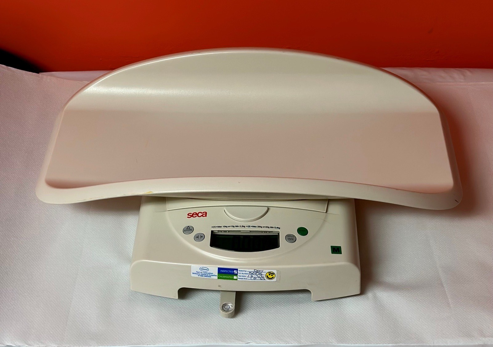
- The US schedule and what each visit checks
- Compare twelve selected programmes
- Developmental surveillance vs structured screening
- Autism screening recommendations
- Vision and hearing surveillance
- Iron and the 12-month hemoglobin
- Lead screening: the decision rule
- Fluoride varnish and supplements
- Caregiver mood screening
- Missed visits and access
- Choosing (and switching) a provider
- Nurse lines and telehealth
The US schedule and what each visit checks
The AAP periodicity schedule names newborn, three-to-five-day, one-, two-, four-, six-, nine-, twelve-, fifteen-, eighteen-, twenty-four- and thirty-month ages. These are scheduled assessments, not guaranteed office encounters or a ranking against other countries. The clinician may add or change contacts for individual needs. AAP 2025 schedule.
Compare twelve selected programmes
This comparison describes twelve named programmes, including regional services. Contacts, provider roles and parent records differ; the rows are not comparable national visit totals. Select a programme for direct official guidance, then confirm the local appointments and any extra care with your team. Availability, uptake, cost and quality are not measured here.
Developmental surveillance vs structured screening
Development is reviewed throughout routine care. A validated screen supplements that review at nine, eighteen and thirty months in the AAP schedule, and whenever concerns arise. Share specific examples or lost skills even when the next scheduled screen is months away. AAP schedule.
Autism screening recommendations
AAP routine autism screening is at eighteen and twenty-four months. Assessment for a concern can happen earlier. Screening, a detailed diagnostic evaluation and ongoing developmental support serve different purposes; one does not replace the others. AAP schedule.
Vision and hearing surveillance
Confirm the newborn hearing result and any repeat appointment. Routine visits include eye and hearing surveillance, with additional testing when risk or concern warrants it. Screening may miss a problem that emerges later. Ask promptly about a new hearing or vision concern rather than waiting for a formal screen. AAP schedule.
Iron and the 12-month hemoglobin
AAP routine anemia screening is around twelve months, with risk assessment and earlier or additional testing when indicated. Newborn bloodspot screening is a different test. Ask what a result means and what follow-up is required rather than starting an iron dose from a number alone. AAP schedule.
Lead screening: the decision rule
Lead testing depends on risk and programme requirements. Tell the team about housing, renovation and possible occupational exposure. A routine visit should establish which tests are needed; a normal physical examination cannot rule out lead exposure. AAP lead-screening notes.
Fluoride varnish and supplements
Ask about tooth brushing, fluoride varnish and the first dental visit. These are separate from swallowed prescription fluoride products, whose US age and cavity-risk restrictions changed. See oral care before considering an infant supplement. FDA information.
Caregiver mood screening
The AAP schedule includes maternal depression screening during the one-, two-, four- and six-month infant visits. A screen prompts assessment; it is not a diagnosis or a limit on when help is available. Tell your own clinician about severe or persistent symptoms between visits. AAP schedule.
Missed visits and access
If an appointment is missed, contact the clinic to arrange the care that was due. Ask whether measurements, screening, vaccines or other follow-up need to be completed. Do not wait for the next routine age if there is a current symptom or developmental concern.
Choosing (and switching) a provider
Choose a team whose access, communication and services meet the family’s needs. A consistent place for records and follow-up can make coordination easier, but an observational association with a “medical home” does not prove that the label causes better care. Ask who coordinates specialist plans and which number answers between visits.
Nurse lines and telehealth
A remote visit may help discuss feeding, symptoms or plans, but cannot perform every measurement, examination, test or vaccine. Ask what must happen in person and how urgently. A video image is not a reason to dismiss breathing trouble or a sick young infant.
The caregiver
the whole year
Your health belongs in the care plan. Arrange food, rest and someone who can take over safely. Severe low mood, anxiety or symptoms lasting beyond the early baby blues deserves treatment. Unwanted frightening thoughts can occur in anxiety or OCD; a clinician can assess them without assuming intent. If you have an urge or plan to act, cannot keep yourself or the baby safe, or have hallucinations, delusions or confusion, seek emergency help now. During the whole year after birth, tell a clinician about heavy bleeding, fever, severe headache, chest pain or breathing difficulty. CDC warning signs
Mood and treatment · Physical recovery
Reference: the caregiver
Mental-health conditions include suicide and certain overdose/poisoning deaths. Committees judged more than 80% preventable where a determination was recorded; that judgement includes care and system changes, not a promise that parents can prevent every death. About 30% of deaths with known timing occurred forty-three to 365 days postpartum.
- Recovery and urgent maternal symptoms
- Pelvic floor, leaking, sex, and contraception
- Mental health after birth
- Assessing frightening thoughts
- Treatment, and antidepressants while breastfeeding
- The other parent’s health
- Going back to work
- Arranging help
- Body image and recovery
Recovery and urgent maternal symptoms
Recovery depends on the birth and any complications. Get a plan for pain relief, wound care, activity and follow-up. Urgent warning signs include heavy bleeding, severe headache, chest pain, breathing difficulty and a painful swollen limb. Seek immediate care and say that you gave birth within the past year. If the provider cannot be reached, use emergency care. CDC warning signs.
Pelvic floor, leaking, sex, and contraception
Tell the clinician about leakage, pressure, pain with sex or difficulty emptying the bladder or bowel. Ask whether pelvic-health physiotherapy or another assessment is appropriate. A universal Kegel schedule is not a treatment for every symptom. Recovery instructions should fit the injury, symptoms and stage of healing.
Mental health after birth
Depression, anxiety and other perinatal mental-health conditions need assessment and treatment suited to the person. Severe symptoms or impaired functioning warrant help even in the first two weeks. The figure below keeps screening-positive symptoms distinct from diagnoses. You can ask for help after the routine postpartum visit or while your baby appears to be doing well. NIMH guidance.
Respondents with a recent live birth were surveyed two to six months postpartum. “Always” or “often” on either of two adapted questions counted as symptoms. Site response rates were at least 55%; the estimates do not diagnose an individual or describe every US birth.
Assessing frightening thoughts
Tell a clinician about unwanted harm thoughts and their effect on daily care. Intent, a plan, inability to remain safe, hallucinations, delusions, mania or marked confusion require immediate help. Arrange a safe adult to care for the baby while help is obtained. Do not use prevalence statistics to decide that an individual symptom is harmless. See the urgent route.
Treatment, and antidepressants while breastfeeding
Treatment may include psychotherapy, medicines or both. Choice depends on symptoms, previous response, other conditions, feeding and available support. Ask the prescriber and pharmacist about a particular medicine, infant monitoring and any driving or sedation restrictions. A drug’s rapid trial response does not prove it is best for everyone. Do not stop psychiatric treatment abruptly to protect breastfeeding. NIMH treatment information.
The other parent’s health
Partners can also experience depression and need their own route to care. The plotted paternal estimates come from selected studies with different time windows, not a prediction for all caregivers or evidence that every father peaks at three to six months. Ask about symptoms and practical support without assuming that one parent’s distress matters less. Paulson and Bazemore 2010.
Most studies used self-report measures and convenience samples. Heterogeneity was substantial. The subgroup does not establish a universal later peak, an opposite maternal curve or a screening deadline for every father.
Going back to work
Make a plan for leave, income, feeding and childcare using the current employer and local rules. Most covered US workers have reasonable pumping breaks and a private space other than a bathroom for a year after birth, with statutory exceptions and details. This is different from paid leave or a promise that every break is paid. Check your coverage and request process. DOL pumping rights.
Arranging help
Ask for specific help: a meal, a bottle wash, a safe caregiving shift or transport to a visit. Arrange rest without extending the baby’s feeding interval beyond the clinical plan or compromising sleep safety. If exhaustion is accompanied by depression, anxiety or inability to remain safe, practical help and clinical care may both be needed.
Body image and recovery
There is no deadline for resembling a pre-pregnancy body. If exercise, eating, sex or body image is causing distress, discuss it at the postpartum visit or sooner. Ask for a recovery plan that fits your symptoms rather than treating a social-media programme as medical clearance.
If your situation is different
as needed
Let the individual care plan lead. Prematurity, a NICU stay, a diagnosis or an unusual family situation changes parts of this guide. Ask the care team for written feeding, medicine, screening and follow-up instructions, with a number to call when the plan is not working. Corrected age and growth tools have limits. Benefits, parentage and immigration rules depend on jurisdiction and can change; confirm deadlines with the relevant program or a qualified adviser. The reference covers these situations without assuming one arrangement fits every family.
Prematurity and NICU care · Adoption and fostering
Reference: if your situation is different
- If your baby was born premature, or you are in the NICU
- Corrected age: the preemie subtraction
- If you have twins, triplets, or more
- Reflux and feeding distress
- If you are formula-feeding
- If your baby has Down syndrome
- Feeding with a cleft palate or heart condition
- If your baby has a rare or complex diagnosis
- Opioid exposure and newborn withdrawal
- Substance-use treatment and breastfeeding
- Congenital CMV: testing and follow-up
- If your baby was exposed to alcohol before birth (FASD)
- If you adopted or are fostering
- If you are a grandparent or relative raising this baby
- Inducing lactation
- Establishing legal parentage
- If your child is donor-conceived
- Adapting care for a parent's disability
- Military-family enrollment and support
- Parenting during incarceration
- Language, coverage and immigration questions
- Distance from care
- Support for a teen parent
- If money is tight or food is short
- After a loss
If your baby was born premature, or you are in the NICU
Leave the NICU with a written plan for feeding, medicines, growth, screening, equipment and follow-up, including whom to call at night. Ask which advice differs from ordinary term-infant care. Skin-to-skin care can be part of care for small and premature babies, but positioning and monitoring must follow the team’s plan. Do not change fortification or oxygen settings using a general guide. WHO preterm guidance.
Corrected age: the preemie subtraction
Record both birth date and due date. Ask which age to use for each developmental or growth assessment. Corrected age does not replace chronological age for the under-three-month fever rule or routine immunization. The growth section explains the tool’s limits. AAP corrected age.
If you have twins, triplets, or more
Each baby needs an individual feeding, growth and medical record. A sibling’s intake or progress does not establish that the other baby is doing well. Arrange help with feeds and safe sleep spaces for each child. Ask the team to write down different instructions so caregivers do not confuse medicines or plans.
Reflux and feeding distress
Distinguish ordinary spit-up from distress, poor growth and other symptoms with the care team. Do not tilt the cot or change sleep position. Thickening or acid-suppressing treatment is a clinical decision, not an automatic response to crying. Green or bloody vomit and forceful repeated vomiting need urgent assessment. NHS guidance.
If you are formula-feeding
A suspected milk-protein allergy needs a plan that preserves nutrition and establishes how the diagnosis will be reviewed. Extensively hydrolyzed and amino-acid formulas have specific uses; lactose-free or goat-milk products do not automatically solve milk-protein allergy. Reaction type determines whether reintroduction can happen at home. Severe immediate reactions and suspected FPIES need specialist supervision. CPS allergy statement.
If your baby has Down syndrome
Ask for the condition-specific health-supervision plan and the referrals it requires. Feeding, growth, hearing, vision and other surveillance may differ from the general schedule. Bring the written plan to each new provider rather than using a generic milestone chart to decide whether follow-up is necessary.
Feeding with a cleft palate or heart condition
Cleft palate and congenital heart disease can require specialized feeding and follow-up. Ask the specialist team to show you the equipment and feeding technique and to define when to call for poor intake or breathing difficulty. Do not modify a nipple, thicken feeds or raise calorie concentration without the team’s instructions. Seattle Children’s cleft care.
If your baby has a rare or complex diagnosis
For a rare condition, keep a brief emergency summary, medication list and specialist contact with the care record. Ask which ordinary infant symptoms are more urgent for this baby and where the baby should be assessed. A rare-disease group may offer support, but clinical instructions need the treating team’s review.
Opioid exposure and newborn withdrawal
Opioid-exposed infants may need observation and treatment for withdrawal. Family participation, soothing and feeding can be part of the care plan, while staff assess symptoms and decide whether medicine is required. Trials of a care bundle do not show that parent presence alone is the active ingredient or replace escalation for a sick baby. CDC infant withdrawal care.
Substance-use treatment and breastfeeding
A substance-use disorder deserves continuing treatment and a feeding plan reviewed with the addiction and infant-care teams. The safety of breastfeeding depends on the particular substance or medicine, current use and the baby’s health. Do not abruptly stop prescribed treatment or assume that every exposure requires the same feeding response. Ask what to do after a recurrence of use and who can help immediately. CDC medicines and substances.
Congenital CMV: testing and follow-up
Congenital CMV may require hearing surveillance and other specialist follow-up even when an infant initially appears well. Testing and antiviral decisions depend on timing, findings and current specialist guidance. CPS added guidance on isolated hearing loss in 2025, with limited evidence; it should not be described as categorically ineligible for treatment. Ask for the specific follow-up plan. CPS CMV statement and addendum.
If your baby was exposed to alcohol before birth (FASD)
Tell the clinician about possible prenatal alcohol exposure so assessment and support can reflect the history. A normal newborn appearance cannot settle every developmental question. Arrange follow-up for concerns without assuming that an exposure establishes a diagnosis or predicts an individual outcome.
If you adopted or are fostering
Bring every available birth, screening, feeding and vaccination record to the first visit. Ask what remains unknown and which assessments or repeats are needed. For an international adoption, use a clinician familiar with the relevant history and travel. Feeding, bonding and medical care can be planned without pretending that all records are complete.
If you are a grandparent or relative raising this baby
If you are caring for a relative’s child, ask who can consent to care, obtain records and enroll the baby in benefits. The answer depends on the custody arrangement and local law. A clinic social worker or legal-aid service can help identify the documents needed. Keep practical care moving while those questions are resolved.
Inducing lactation
If considering induced lactation or relactation, consult a qualified feeding clinician. Discuss likely milk supply, supplementation, medicines and monitoring without a promise of exclusive milk feeding. The baby’s intake and growth remain the priority. Do not obtain domperidone from an internet seller; US FDA information describes approval and cardiac-safety concerns. FDA information.
Establishing legal parentage
Ask the care team to record the family’s names, roles and contact preferences accurately. Confirm who can consent to medical care and which legal documents are needed in your jurisdiction. Inclusive language at a clinic does not itself establish parentage. Bring a legal question to a qualified local adviser rather than relying on a general account of another country’s law.
If your child is donor-conceived
Keep donor and treatment records that may be useful for the child’s health history. Ask the clinic or agency what information can be retained, updated or accessed later. Disclosure, identity-access and anonymity rules differ by jurisdiction and can change. No single timetable or promise of lifelong anonymity fits every family.
Adapting care for a parent's disability
Ask for accessible appointments, appropriate equipment and support with the tasks that are difficult for you. Occupational therapy or another specialist may help adapt care. A disability label alone does not determine which infant-care tasks a parent can perform. Make the actual assistance and emergency plan explicit.
Military-family enrollment and support
Confirm the baby’s registration, insurance, local clinic and emergency route with the relevant military or civilian service. Deployment and relocation can affect which team holds the records. Carry a concise care summary and request the current local eligibility rules rather than assuming a named benefit applies everywhere.
Parenting during incarceration
Care during parental incarceration depends on the facility, custody arrangement and jurisdiction. Ask who can authorize care, how contact and feeding plans work, and how discharge or release is coordinated. Federal foster-care law generally requires a parental-rights petition after fifteen of the most recent twenty-two months in state-responsibility foster care. Exceptions include a relative placement at the state’s option, a documented compelling reason that filing is not in the child’s best interests, or required reunification services not provided. Filing is not automatic termination. The court process and local facts need qualified legal advice. 42 USC 675(5)(E).
Language, coverage and immigration questions
Ask the clinic about interpreters, records and the locally available care and nutrition programmes. Eligibility can depend on the person, benefit and jurisdiction. Get immigration questions from a qualified adviser, and do not infer a family’s status or entitlement from a generic benefit list. Keep the baby’s screening and vaccination history with you.
Distance from care
Plan transport, urgent assessment and specialist follow-up before a crisis. Ask which clinic answers after hours and when the baby must be seen in person. Remote appointments can help with some conversations but do not supply every examination or treatment. Tell the care team about distance or transport problems so the follow-up plan is workable.
Support for a teen parent
A young parent needs clear instructions, practical support and a chance to ask questions privately when appropriate. Ask the local team about consent rules, school arrangements and available services. Age alone does not establish benefit eligibility or the right to make every medical decision.
If money is tight or food is short
Ask a clinic social worker or local agency about insurance, nutrition, transport and childcare support. US WIC requires an eligible category, local application, income criteria and a nutrition assessment; Medicaid, SNAP or TANF participation may meet the income criterion. It does not complete all enrollment requirements. Use the current agency table rather than an old dollar limit. Current WIC eligibility.
After a loss
After pregnancy or infant loss, ask the care team about medical follow-up, grief support and practical decisions. If you are caring for a surviving sibling, their care plan and your own recovery both need attention. Seek urgent help for inability to remain safe or severe mental-health symptoms; bereavement does not require managing them alone.
Money, gear and logistics
the whole year
Budget from your own bills and deadlines. Get estimates for birth-related out-of-pocket costs, insurance enrollment, leave and childcare. Ask what the estimate includes and whether the clinician and hospital are in network. Compare actual local childcare quotes. Gear spending is easier to control: prioritize safe sleep and transport, then buy for the baby you have. A historical average or registry discount is not a price quote. Check benefits and tax rules for the year and location that apply to you.
Birth and insurance costs · Benefits and tax credits
Reference: money, gear and logistics
- Building a first-year budget
- The cost of the birth itself
- Gear worth planning for
- When a used product needs a safety check
- Using a registry
- Leave and childcare
- Benefits and tax credits
Building a first-year budget
Make a budget from the family’s own housing, income, feeding and childcare needs. National averages cannot predict this household’s first-year bill. Separate recurring costs from one-time purchases and ask which items can be borrowed safely. Leave room for a changed feeding or care plan.
The cost of the birth itself
Ask the insurer and hospital for estimates, coverage details and financial-assistance options. An estimate is not the final bill. Afterward, request an itemized bill and explanation of benefits, and query discrepancies with the insurer and provider. Check filing deadlines and keep copies; do not assume that every neonatal service is already billed under the parent’s coverage.
Gear worth planning for
Buy for a current need rather than a promised developmental advantage. Prioritize a suitable sleep surface, travel restraint and feeding supplies. Check instructions and recalls. A used item can be economical only if its condition, history and safety requirements are known.
When a used product needs a safety check
Be especially cautious with car seats and sleep equipment. A car seat needs a known history and must meet the manufacturer’s lifetime and recall requirements. A crib needs all required parts and compliance with applicable safety standards. Do not improvise repairs or use an added mattress or cushion to make an unsuitable product work. NHTSA car seats. AAP sleep equipment.
Using a registry
A short registry can cover daily care and leave room for help with meals or household work. Ask what the birth centre supplies before duplicating it. Keep gifts that require a safe-age limit or clinical instruction out of use until they are appropriate.
Leave and childcare
Check leave rights, wage replacement and job protection separately. Federal US FMLA is unpaid and depends on worker and employer eligibility. State schemes and employer policies have different rules and may change. The OECD chart is a dated comparison of selected national systems, not a calculation of your entitlement. The childcare chart is a historical statewide price comparison; obtain current local quotes. FMLA regulation.
Assumptions include eligible private-sector parents at average earnings and a first healthy singleton birth, with transferable leave assigned to the mother. Some systems use net pay and others gross pay; state, local and employer benefits and individual eligibility are outside this comparison.
Benefits and tax credits
Apply through the current local programme and ask what documents are required. WIC’s income route is one part of eligibility, alongside category, location and nutrition assessment. For US tax credits, use the relevant tax-year IRS instructions and the household’s circumstances; an old dollar amount is not a current guarantee. WIC requirements; IRS child tax credit.
Myths, old advice and marketing
the whole year
Ask what the advice changes. Advice about fever, feeding, sleep position, choking or medicines can affect health. Check those claims against current guidance. Claims about buying intelligence, detoxing a baby or treating every ordinary variation usually need better evidence than an advertisement provides. Teething does not explain a true fever. Do not use amber necklaces, baby walkers or unprescribed supplements. When advice conflicts, take the specific claim to your clinician. AAP walker guidance.
Common claims · Advice that can cause harm
Reference: myths, old advice and marketing
Common claims
A familiar claim still needs a specific question. Does the product treat an identified problem? What outcome was measured, in which babies, and compared with what? A before-and-after story cannot show that the product caused improvement. Use the linked sleep, feeding, colic and teething advice for the practical decisions rather than a long list of slogans.
Context-dependent advice
Advice can contain a useful observation and an unsupported conclusion. Babies do change their sleep and crying, but a chart does not establish a fixed leap calendar. Some infants need specialized feeding, but a fussy evening does not diagnose allergy. Ask which observation would change the care plan, and whether another explanation has been considered.
Checking product claims
Read the claimed outcome as carefully as the ingredient list. “Clinically tested” may describe a study of a different formulation, age or outcome. An infant photograph, scientific term or testimonial does not establish benefit. Avoid promises about intelligence, attachment or a permanently improved sleep pattern that exceed the measured result.
Advice that can cause harm
Unsafe advice can arrive with warmth and good intentions. If it conflicts with current sleep, medicine, feeding or emergency guidance, check it with the appropriate clinician before using it. State the practical plan plainly to caregivers so a family argument does not substitute for safe care.
How the world does it
all of it
Other arrangements can show where help is missing. Families organize care differently, and selected studies describe many workable forms of support. They do not establish one universal human parenting style. Comparing leave, home visits and help from relatives can suggest practical support to arrange. Cultural familiarity does not establish the safety of a sleep surface, feeding practice or treatment. Use current safety guidance alongside the arrangements your household can sustain.
Shared care · Other health systems
Reference: how the world does it
- What comparisons can show
- Care shared with other adults
- Sleep practices across cultures
- Postpartum confinement traditions
- A century of change in infant mortality
- Selected changes in official guidance
- Well-baby programmes
What comparisons can show
A family’s care takes place within available services, housing, work and support. Comparisons can suggest questions to ask locally, but a description of one community cannot establish what every parent in a country does. The mortality figures below also separate historical estimates, registered deaths and modeled global totals.
Care shared with other adults
Help can come from relatives, friends, neighbours and formal services. Describing care in another community does not identify a universal ancestral response time or prove that one arrangement causes better development. Decide who can safely help with actual tasks, and use local clinical guidance for feeding, illness and sleep.
Sleep practices across cultures
Published Dutch-US comparisons describe selected families and observed routines, not national prescriptions. One study interviewed thirty-three Dutch and forty-one US mothers from selected middle-class communities using data collected in 2001 to 2005. Its observations cannot show that a cultural style causes a fixed extra amount of sleep. Use such accounts to understand differences, while checking any proposed sleep arrangement against current safety guidance. van Schaik 2020.
Postpartum confinement traditions
Postpartum traditions may provide food, rest and company. Their value to a family depends on what they actually permit and supply. Do not treat a cultural name as evidence that a restriction is medically beneficial or that every family receives the same support. Keep access to urgent care, adequate nutrition and mental-health help within any recovery plan.
A century of change in infant mortality
Long-run infant mortality has fallen substantially, but early US registration areas changed and were not a complete national count. Selected-year lines cannot identify one cause of the decline. Improvements in public health, living conditions and medical care occurred together. Historical comparisons should not be turned into a claim that a current family’s practices caused a death or can eliminate every risk. CDC historical account.
Gold shows the historical vital-registration series; blue shows linked birth and infant-death records, with weights for unlinked records. Early geographic coverage changed. Small differences between systems are expected. Lines join selected points and cannot isolate an intervention’s contribution.
Selected changes in official guidance
The dated markers below identify publications and programmes, not uniform national practice. Advice sometimes changes because evidence and conditions change; that does not make every recommendation arbitrary. For today’s decisions, ask about the specific evidence and current guidance rather than assuming that an older or newer rule must be right.
Well-baby programmes
The programme comparison supplies direct official descriptions for twelve named services. Some rows are national frameworks and others are regional programmes. A parent-held record, home contact or specified review window does not establish universal availability or an entitlement to every service. Use the linked source to find the local route and confirm appointments, costs and additional needs.
Turning one
month 12
Change the diet gradually, and keep following growth. Around twelve months, healthy children can usually move from infant formula to food, water and plain whole milk, or an appropriate fortified alternative. Breastfeeding can continue for as long as parent and child want. Babies with prematurity, allergy, growth difficulties or a prescribed formula need their own transition plan. Practice with a cup and keep offering iron-rich foods, safe textures and varied family food. Arrange the twelve-month visit and ask about vaccines, anemia or lead screening and the next developmental checks.
Milk after twelve months · The twelve-month visit
Reference: turning one
Whole milk as a drink
From twelve months, US guidance permits pasteurized whole cow’s milk or an appropriate fortified alternative as part of a varied diet. Breastfeeding can continue. Milk is not a replacement for food. Discuss the choice and amount if there is allergy, growth concern or a restricted diet; plant drinks vary considerably in nutrients. Do not substitute toddler drinks for an individual clinical plan. CDC milk guidance.
Transitioning from formula, or continuing breastfeeding
If changing breastfeeding, pumping or bottle feeds, choose a pace that works for the family and ask for help with pain, engorgement or the child’s intake. The first birthday is not a deadline to end breastfeeding. A specialized nutrition plan may need a different transition, so confirm it before switching products.
Moving from bottle to cup
Offer practice with an age-appropriate cup while seated and supervised. Keep bottles out of bed, and use water rather than a sweet drink for routine thirst between meals when appropriate for the child’s age and plan. Cup practice does not require a particular branded product. AAP oral care.
Table foods
Offer varied foods in safe textures with an attentive adult. Keep adapting round, hard or sticky foods and remove bones and pits. The birthday does not remove choking risk. Avoid unpasteurized products, and follow the child’s allergy plan. Honey’s infant restriction lasts through the first twelve months; it is not a reason to make sweet foods a routine part of the diet. CDC food precautions.
The supplement summary
Review vitamin D, iron and any other supplement at the visit, using the actual diet, feeding volume, risks and test results. Twelve-to-twenty-four-month-olds need 600 IU of vitamin D daily from diet and supplements combined. Do not add iron for a claimed brain benefit or stop it because of a subgroup finding in an old trial. Follow the child’s assessed need and the product’s confirmed dose. CDC vitamin D.
The twelve-month visit
Bring the vaccine record, medicine list, feeding questions and concerns about growth, hearing, vision or development. In US AAP guidance the twelve-month review includes anemia screening, with other testing according to risk and requirements. Confirm the next appointments rather than assuming that every country uses this calendar. AAP schedule.
What changes next
Care continues beyond the first birthday. Keep a current record and a route for urgent questions, adapt safety measures as movement changes, and raise concerns when they arise. The next routine appointment is a place to review the plan, not a reason to wait through a worrying change.
Sources, evidence, and a note on trust
The October 2026 review read every chapter and disclosure and checked consequential safety, feeding, sleep, medication and vaccination advice against linked official guidance. The retained figures identify their study populations and dated datasets. Source access varies: some papers were read in full, while the Gradisar sleep trial and the Cochrane diet review are described from abstracts. A citation does not establish clinical validation.
How to read the evidence
Read the source for its population, methods and date. A randomized trial, an observational association and a guideline answer different questions. Earlier editorial evidence chips have been removed; this guide has no formal evidence-grading system.
Safety guidance and tools reviewed 4 October 2026. Use current local schedules, product labels and the child’s clinical plan before acting. The review did not reproduce the original analyses or validate this guide as a clinical decision system.
Guidance and original sources
Practical advice links to the relevant AAP, CDC, FDA, NHS, NICE, Canadian Paediatric Society, Royal Children’s Hospital, WHO or other official guidance beside the claim. Programme rows name their jurisdiction and link directly to its service. Figures identify the original study or dated dataset, with population and method limits. The Gradisar sleep trial is described from its abstract; the other retained trial estimates come from the opened methods and results. No citation here is a formal clinical review of this guide.
A short glossary
· · ·
How this was made
AI helped assemble this reference and its charts. The October 2026 editorial review read every chapter and disclosure, checked consequential care advice against current official guidance, and revised the tools. It did not independently reproduce every study or establish the provenance of the original research process. The linked papers and dated datasets remain the evidence to inspect.
Review date: 4 October 2026.